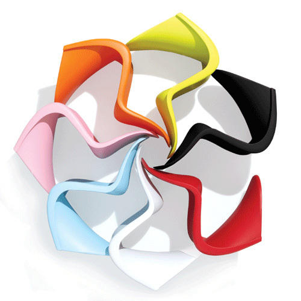
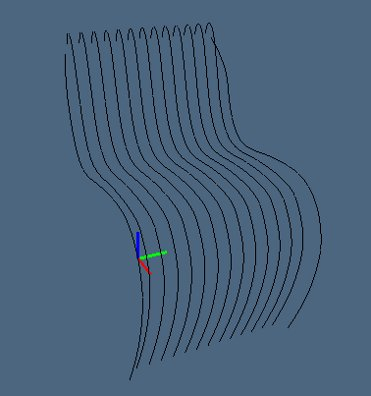
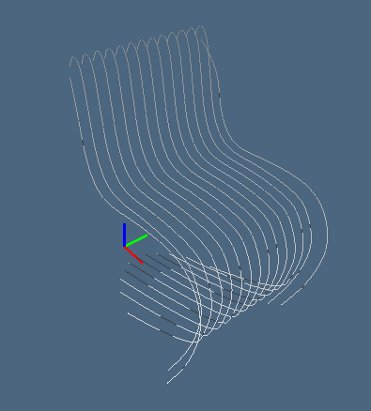
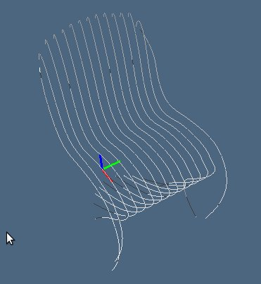
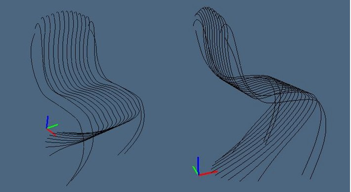
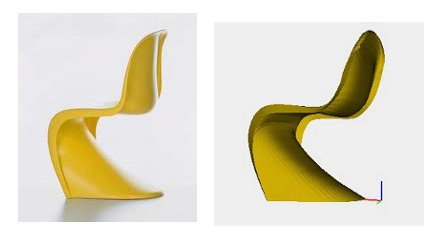

Verner Panton, Panton Chair, 1960

The particular structure of the chair, consisting of a single piece of plastic, makes it difficult to build the model by composing separate parts. For this reason I decided to use a single starting array of points that given as input to the function panton allows to obtain the shape of the chair parametrically.
function panton(p){
var v0 = [0,2.3,3.1,3.55,3.8,4,4.1,4,3.8,3.55,3.1,2.3,0];
var v1 = [0,0.5,0.6,0.7,0.8,0.85,0.85,0.85,0.8,0.7,0.6,0.5,0];
var p0 = trasla_y(p);
var p1 = trasla_x0(p0,v0);
var p2 = trasla_fix(p1,1,2,-2,0);
var p3 = trasla_fix(p2,2,3,-0.5,0);
var p4 = trasla_fix(p3,2,4,0.5,2);
var p5 = trasla_fix(p4,7,10,-0.25,2);
var p6 = trasla_z12(p5,v1);
var p7 = trasla_fix(p6,12,13,-0.15,2);
var p8 = trasla_fix(p7,9,11,-0.3,0);
return p8;
};
Let's look at the individual steps: first of all, starting from the initial array of points, the function trasla_y generates the points corresponding to the other lines by shifting by a fixed amount along the y axis.
function trasla_y(points){
var p = [];
for(i=0; i<13; i++){
p[i] = trasla(points,[0,i*(0.333333333),0]);
}
return p;
};
Then the function trasla_x0 changes the abscissas of the first point of each set of points displacing them using a given translation vector that allows to obtain the correct shape of the base.
function trasla_x0(points,v){
var p = points;
for(i=1; i<12; i++){
p[i][0][0] = p[i][0][0] - v[i];
}
return p;
};
In a similar way the function trasla_z12 changes the z of the last points of each set of points in order to obtain the correct shape of the top.
function trasla_z12(points,v){
var p = points;
for(i=1; i<12; i++){
p[i][12][2] = p[i][12][2] + v[i];
p[i][13][2] = p[i][13][2] + v[i];
}
return p;
};
To complete the modeling of the chair I used one last function, trasla_fix, which takes as input the array of arrays of points, the range of points to be modified for each array contained in points, the coordinate along which perform the translation and the corresponding value of the translation.
function trasla_fix(points,k1,k2,t,d){
var p = points;
for(i=1; i<12; i++){
for(k=k1;k<k2;k++){
p[i][k][d] = p[i][k][d] + t;
}
return p;
};

Once the "skeleton" of the chair is completed, I created the corresponding nubs and obtained the following model in javascript:

View javascript code